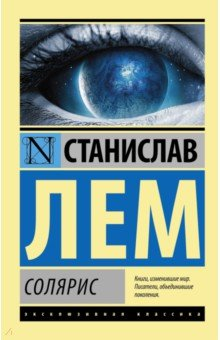
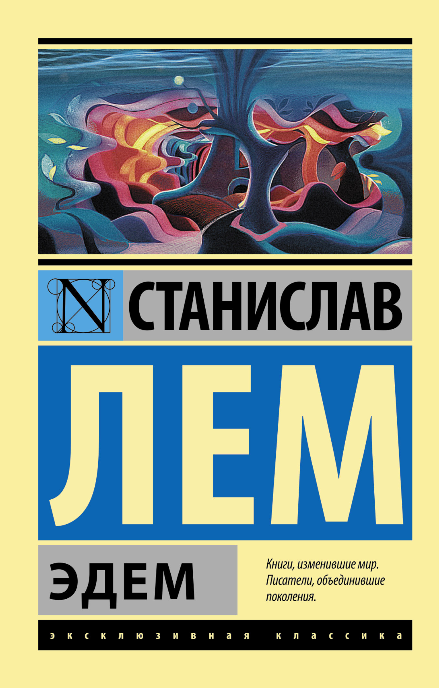

Биография Станислава Лема
Ранние годы
Станислав Лем родился 12 сентября 1921 года во Львове в семье врача. С детства увлекался чтением и наукой.
Образование и увлечения
- Образование
- Гимназия им. Собеского
- Медицинский факультет Львовского университета
- Увлечения
- Литература и философия
- Кибернетика и биология
- Семья
- Отец — врач
- Мать — домохозяйка
Ключевые даты
- Ранний период
- 1921 — рождение во Львове
- 1939 — начало Второй мировой войны
- 1945 — переезд в Краков
- Зрелый период
- 1950 — первые публикации
- 1961 — выход романа «Солярис»
- 2006 — смерть в Кракове
Творчество
Лем написал более 40 книг, переведённых на десятки языков мира. Основные темы — контакт с внеземным разумом, этика технологий, границы познания.
Основные произведения
| Произведение | Год | Обложка | Ссылка |
|---|---|---|---|
| Солярис | 1961 |  |
О книге ↗ |
| Эдем | 1959 |  |
О книге ↗ |